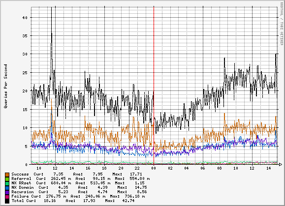
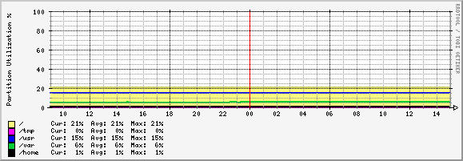
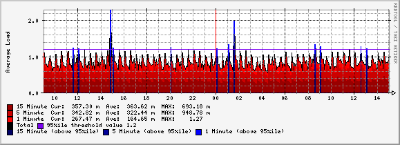

Graphing Nameserver Statistics
Sometimes trends are more informative than snapshots. BIND can append statistics to /var/named/named.stats, for example:
+++ Statistics Dump +++ (1232034903) success 510007943 referral 9162844 nxrrset 57241342 nxdomain 272525211 recursion 348209144 failure 58016681 /--- Statistics Dump --- (1232034903)
The number in parentheses is a timespamp, and can be translated by using date(1):
$ date -r 1232034903 Thu Jan 15 10:55:03 EST 2009
By storing the results of these statistics in a round-robin database a graph can be created to help identify transitory conditions or trends.

Step 1: Create an RRD file (create_rrd.sh)
#!/bin/sh /usr/local/bin/rrdtool create ~/templates/dns.rrd \ --step 300 \ DS:success:COUNTER:600:0:1000000 \ DS:referral:COUNTER:600:0:1000000 \ DS:nxrrset:COUNTER:600:0:100000 \ DS:nxdomain:COUNTER:600:0:100000 \ DS:recursion:COUNTER:600:0:1000000 \ DS:failure:COUNTER:600:0:10000 \ RRA:AVERAGE:0.5:1:800 \ RRA:AVERAGE:0.5:6:800 \ RRA:AVERAGE:0.5:24:800 \ RRA:AVERAGE:0.5:288:800 \ RRA:MAX:0.5:1:800 \ RRA:MAX:0.5:6:800 \ RRA:MAX:0.5:24:800 \ RRA:MAX:0.5:288:800
You can then copy this blank RRD database to the directory where it will be used.
Step 2: Use a script to gather stats and update the RRD file (dns.sh)
#!/bin/sh sudo /bin/cp /dev/null /var/named/named.stats sudo /usr/sbin/rndc stats output=`grep -v Statistics /var/named/named.stats | awk ' {out=out c $2; c=":"} END {print out} '` /usr/local/bin/rrdtool update \ ~/logs/dns.rrd \ --template \ success:referral:nxrrset:nxdomain:recursion:failure \ N:$output
Step 3: Edit the sudoers file to allow these updates from this user:
Cmnd_Alias STATS = /usr/sbin/rndc stats, \ /bin/cp /dev/null /var/named/named.stats rrd ALL = NOPASSWD: STATS
Step 4: Create a script to gather all data (poll.sh)
#!/bin/sh
scripts/localhost/load_avg.sh
scripts/localhost/procs.sh
scripts/localhost/dns.sh
scripts/localhost/disk.s
Step 5: Schedule updates
$ crontab -l #minute hour mday month wday command */5 * * * * poll.sh
Step 6: Generate graphs (rrd.cgi)
Title[load_avg]: Load Average
PageTop[load_avg]: <H1>Load Average</H1>
Directory[load_avg]: localhost_stats
PercentileValue[load_avg]: 95
PercentileSources[load_avg]: 0+1+2
Graph[load_avg]:
-v "Average Load"
--rigid
-l 0
DEF:a=load_avg.rrd:1min:AVERAGE
DEF:b=load_avg.rrd:5min:AVERAGE
DEF:c=load_avg.rrd:15min:AVERAGE
CDEF:cdefd=a,b,c,+,+
CDEF:flag=cdefd,%PERCENTILE0%,GT,1,0,IF
CDEF:cdefabelow=1,flag,EQ,0,a,IF
CDEF:cdefbbelow=1,flag,EQ,0,b,IF
CDEF:cdefcbelow=1,flag,EQ,0,c,IF
CDEF:cdefaabove=flag,a,*
CDEF:cdefbabove=flag,b,*
CDEF:cdefcabove=flag,c,*
AREA:cdefcbelow#990000:"15 Minute"
GPRINT:c:LAST:"Cur\:%8.2lf %s"
GPRINT:c:AVERAGE:"Ave\:%8.2lf %s"
GPRINT:c:MAX:"MAX\:%8.2lf %s\n"
STACK:cdefbbelow#cc0000:"5 Minute"
GPRINT:b:LAST:" Cur\:%8.2lf %s"
GPRINT:b:AVERAGE:"Ave\:%8.2lf %s"
GPRINT:b:MAX:"MAX\:%8.2lf %s\n"
STACK:cdefabelow#ff0000:"1 Minute"
GPRINT:a:LAST:" Cur\:%8.2lf %s"
GPRINT:a:AVERAGE:"Ave\:%8.2lf %s"
GPRINT:a:MAX:"MAX\:%8.2lf %s\n"
LINE1:cdefd#000001:Total
HRULE:%PERCENTILE0%#7c03f1:"%PERCENTILEVALUE%%ile threshold value %PERCENTILE0%\n"
AREA:cdefcabove#000066:"15 Minute (above %PERCENTILEVALUE%%ile)"
STACK:cdefbabove#000099:"5 Minute (above %PERCENTILEVALUE%%ile)"
STACK:cdefaabove#0000ff:"1 Minute (above %PERCENTILEVALUE%%ile)\n"
Other Examples
Disk Usage

Load Average
